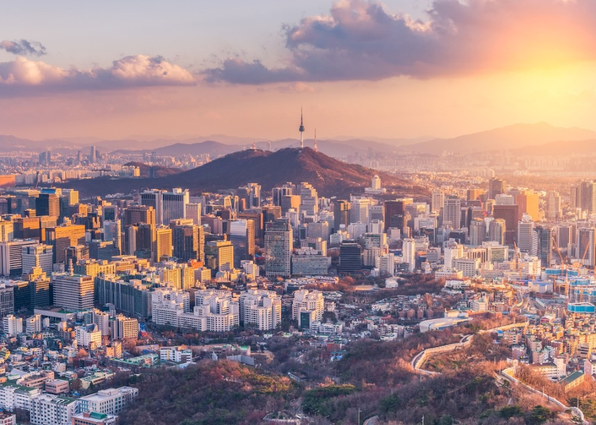
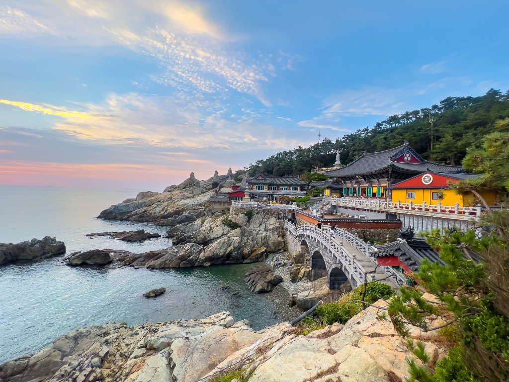
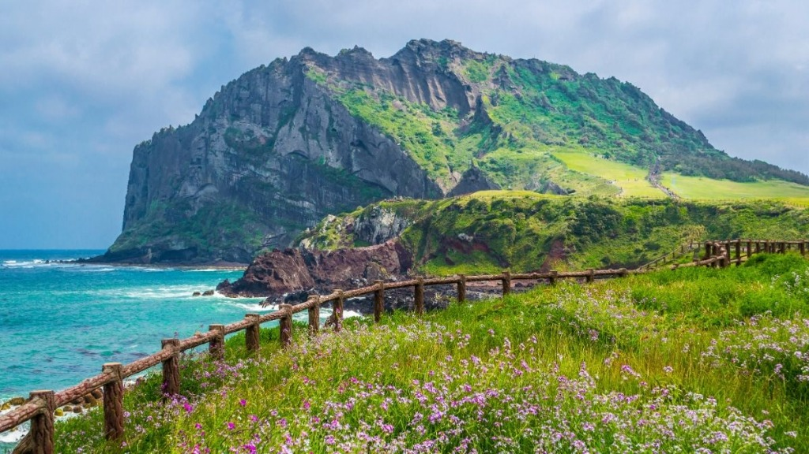
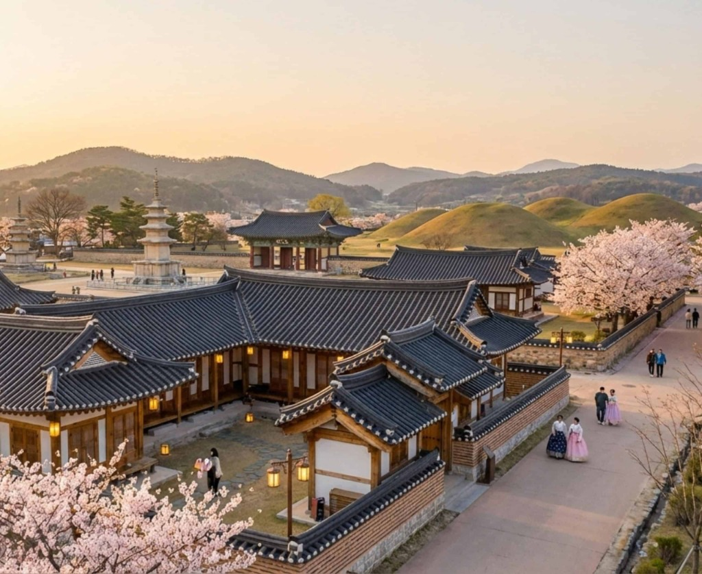

Seoul is the pulsing heart of South Korea, where cutting-edge technology and massive skyscrapers harmoniously sit alongside ancient Joseon Dynasty palaces and quiet traditional tea houses. It is a city that never sleeps, offering world-class public transit, vibrant street markets, rich design hubs like the DDP, and late-night food scenes.

As Korea's second largest metropolis and principal seaport, Busan is known for its energetic coastal lifestyle. It offers a unique combination of beautiful sandy beaches, seafood markets, dramatic cliff-side temples, and colorful artistic mountainside neighborhoods. The city is famous for its friendly atmosphere and hosting the major Busan International Film Festival.

Jeju Island, situated off the southern coast, is Korea’s premier holiday getaway. Crowned by Hallasan—the country's tallest mountain and shield volcano—Jeju boasts sub-tropical weather, dramatic black volcanic basalt coastlines, majestic waterfalls, and unique lava tunnels. It is a UNESCO World Heritage site and a peaceful escape for hiking lovers.

Gyeongju was the proud capital of the ancient Silla Dynasty for nearly a thousand years. Today, the entire city acts as an open-air historical museum. Green grass-covered tumuli (royal burial mounds) rise directly in the middle of town, surrounded by UNESCO-listed wooden temples, stone astronomical towers, and peaceful palaces displaying Silla's golden age.